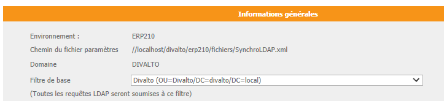

Définir des règles de filtrage est particulièrement intéressant lorsque tous les utilisateurs de l’annuaire LDAP ne sont pas utilisateurs de l’ERP, dans le cadre d’un annuaire LDAP mutualisé ou encore si l’on souhaite mettre à disposition un environnement de formation ou de test pour lequel tous les utilisateurs ne sont pas concernés.
Les filtres doivent être définis au niveau de l'annuaire LDAP ("Organization Units" ou OU).
On peut sélectionner un filtre au lancement de la console d'administration LDAP (multi-choix "Filtre de base") :
